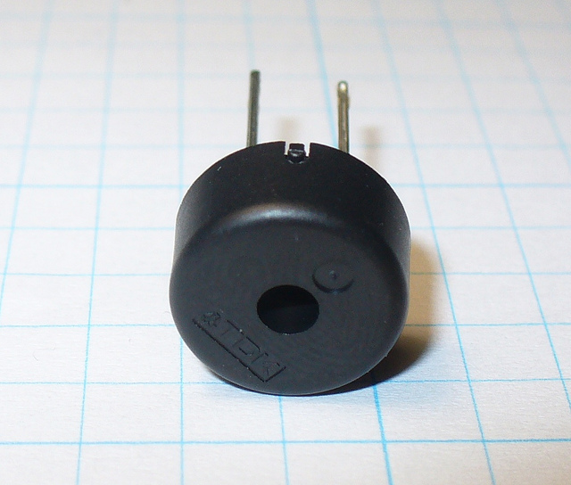

Input/Output¶
There are strips of metal along the bottom edge of the BBC micro:bit that make it look as if the device has teeth. These are the input/output pins (or I/O pins for short).

Some of the pins are bigger than others so it’s possible to attach crocodile clips to them. These are the ones labelled 0, 1, 2, 3V and GND (computers always start counting from zero). If you attach an edge connector board to the device it’s possible to plug in wires connected to the other (smaller) pins.
Each pin on the BBC micro:bit is represented by an object called pinN
where N is the pin number. So, for example, to do things with the pin
labelled with a 0 (zero), use the object called pin0.
Simple!
These objects have various methods associated with them depending upon what the specific pin is capable of.
Ticklish Python¶
The simplest example of input via the pins is a check to see if they are touched. So, you can tickle your device to make it laugh like this:
from microbit import *
while True:
if pin0.is_touched():
display.show(Image.HAPPY)
else:
display.show(Image.SAD)
With one hand, hold your device by the GND pin. Then, with your other hand, touch (or tickle) the 0 (zero) pin. You should see the display change from grumpy to happy!
This is a form of very basic input measurement. However, the fun really starts when you plug in circuits and other devices via the pins.
Bleeps and Bloops¶
The simplest thing we can attach to the device is a Piezo buzzer. We’re going to use it for output.
These small devices play a high-pitched bleep when connected to a circuit. To attach one to your BBC micro:bit you should attach crocodile clips to pin 0 and GND (as shown below).

The wire from pin 0 should be attached to the positive connector on the buzzer and the wire from GND to the negative connector.
The following program will cause the buzzer to make a sound:
from microbit import *
pin0.write_digital(1)
This is fun for about 5 seconds and then you’ll want to make the horrible squeaking stop. Let’s improve our example and make the device bleep:
from microbit import *
while True:
pin0.write_digital(1)
sleep(20)
pin0.write_digital(0)
sleep(480)
Can you work out how this script works? Remember that 1 is “on” and 0
is “off” in the digital world.
The device is put into an infinite loop and immediately switches pin 0 on. This causes the buzzer to emit a beep. While the buzzer is beeping, the device sleeps for twenty milliseconds and then switches pin 0 off. This gives the effect of a short bleep. Finally, the device sleeps for 480 milliseconds before looping back and starting all over again. This means you’ll get two bleeps per second (one every 500 milliseconds).
We’ve made a very simple metronome!